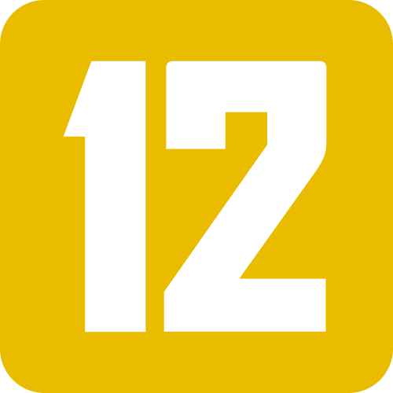
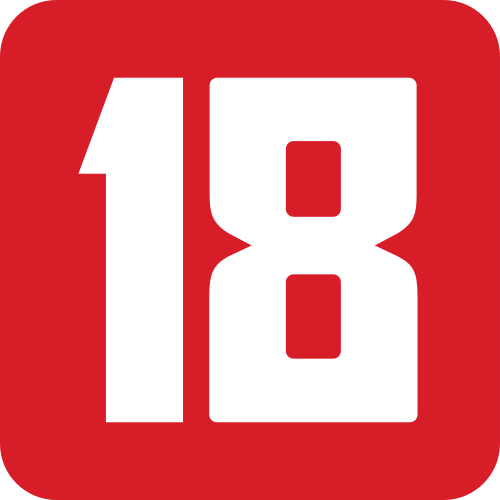

주간 상영리스트

2차 송환

가재가 노래하는 곳
고 비트윈(키친 싱크대의 시대, 영국 뉴웨이브)
그 남자, 좋은 간호사
꼭대기 방(키친 싱크대의 시대, 영국 뉴웨이브)
나를 죽여줘(소극장)
낮에는 덥고 밤에는 춥고
낮과 달(소극장)

네이키드(키친 싱크대의 시대, 영국 뉴웨이브)
디셉션(테크)
리멤버
(2022 시네마차이나 in 부산)무명지배: 대환장 특수임무
물방울을 그리는 남자
블랙 아담
빌리 라이어(키친 싱크대의 시대, 영국 뉴웨이브)
성덕
수프와 이데올로기(소극장)
시대혁명(테크)
아나이스 인 러브(테크)
어제 뭐 먹었어? - 극장판
알카라스의 여름
(이지훈의 시네필로)알카라스의 여름
에브리씽 에브리웨어 올 앳 원스
자백
(리플레이)젊은 남자(테크)
죽어도 자이언츠
케스(키친 싱크대의 시대, 영국 뉴웨이브)
탑
토요일 밤과 일요일 아침(키친 싱크대의 시대, 영국 뉴웨이브)
태안
테이스트 오브 허니(키친 싱크대의 시대, 영국 뉴웨이브)
페출리아(키친 싱크대의 시대, 영국 뉴웨이브)
하층민들(키친 싱크대의 시대, 영국 뉴웨이브)
2차 송환
가재가 노래하는 곳
그 남자, 좋은 간호사
나를 죽여줘(소극장)
낮과 달(소극장)
낮에는 덥고 밤에는 춥고
디셉션(테크)
리멤버
만약에....(키친 싱크대의 시대, 영국 뉴웨이브)
물방울을 그리는 남자
블랙 아담
성덕
수프와 이데올로기(소극장)
시대혁명(테크)
아나이스 인 러브(테크)
알카라스의 여름
어제 뭐 먹었어? - 극장판
에브리씽 에브리웨어 올 앳 원스
자백
(리플레이)젊은 남자(테크)
죽어도 자이언츠
탑
태안
하인(키친 싱크대의 시대, 영국 뉴웨이브)
욕망의 끝(키친 싱크대의 시대, 영국 뉴웨이브)
블랙 팬서: 와칸다 포에버
나영길 감독전(앵콜! 수요단편극장)
선데이 블러디 선데이(키친 싱크대의 시대, 영국 뉴웨이브)
빌리 라이어(키친 싱크대의 시대, 영국 뉴웨이브)
미드나잇 카우보이(키친 싱크대의 시대, 영국 뉴웨이브)
성난 얼굴로 돌아보라(키친 싱크대의 시대, 영국 뉴웨이브)
위드네일과 나(키친 싱크대의 시대, 영국 뉴웨이브)
테이스트 오브 허니(키친 싱크대의 시대, 영국 뉴웨이브)
(무대인사) 데시벨 - 중극장
토요일 밤과 일요일 아침(키친 싱크대의 시대, 영국 뉴웨이브)
비틀즈: 하드 데이즈 나이트(키친 싱크대의 시대, 영국 뉴웨이브)
장거리 주자의 외로움(키친 싱크대의 시대, 영국 뉴웨이브)
(영화사랑방)장마
(영화사랑방)귀로
(영화사랑방)미인
(영화사랑방)사랑은 지금부터 시작이야
(2022 시네마차이나 in 부산)완혹청춘
애프터 미투
낮에는 덥고 밤에는 춥고
사랑의 유형(키친 싱크대의 시대, 영국 뉴웨이브)
이노센츠(키친 싱크대의 시대, 영국 뉴웨이브)
장거리 주자의 외로움(키친 싱크대의 시대, 영국 뉴웨이브)
같은 속옷을 입는 두 여자
첫번째 아이
피가로~피가로~피가로~
가재가 노래하는 곳
같은 속옷을 입는 두 여자
(제24회부산독립영화제)메이드인부산 경쟁 1
(제24회부산독립영화제)메이드인부산 경쟁 2
(제24회부산독립영화제)메이드인부산 경쟁 3
(제24회부산독립영화제)메이드인부산 경쟁 4
(제24회부산독립영화제)메이드인부산 경쟁 5
(제24회부산독립영화제)메이드인부산 경쟁 6
(시니어극장)그리스
(영화사랑방)귀로
(제24회부산독립영화제)스펙트럼부산-나우1
(제24회부산독립영화제)스펙트럼부산-나우2
(제24회부산독립영화제)스펙트럼부산-나우3
(제24회부산독립영화제)스펙트럼부산-나우4
(제24회부산독립영화제)스펙트럼부산-나우5
(제24회부산독립영화제)스펙트럼부산-나우6
(제24회부산독립영화제)스펙트럼부산-나우7
(제10회 인도영화제)나트얌
낮과 달(소극장)
낮에는 덥고 밤에는 춥고
디셉션(테크)
(제24회부산독립영화제)딥포커스 1
(제24회부산독립영화제)딥포커스 2
(제24회부산독립영화제)딥포커스 3
(제24회부산독립영화제)딥포커스 4
(제24회부산독립영화제)로컬투로컬 1
(제24회부산독립영화제)로컬투로컬 2
(제24회부산독립영화제)로컬투로컬 3
(제24회부산독립영화제)로컬투로컬 4
(제24회부산독립영화제)로컬투로컬 5
(제24회부산독립영화제)로컬투로컬 6
리멤버
(제24회부산독립영화제)스펙트럼부산-리와인드
(2022 시네마차이나 in 부산)무명지배: 대환장 특수임무
미드나잇 카우보이(키친 싱크대의 시대, 영국 뉴웨이브)
(영화사랑방)미인
바르도, 약간의 진실을 섞은 거짓된 연대기
블랙 팬서: 와칸다 포에버
(영화사랑방)사랑은 지금부터 시작이야
(제10회 인도영화제)샷 부트 쓰리
수프와 이데올로기(소극장)
[제17회 대한민국 대학영화제 특별상영회]섹션 1
[제17회 대한민국 대학영화제 특별상영회]섹션 2
[제17회 대한민국 대학영화제 특별상영회]섹션 3
아나이스 인 러브(테크)
(제10회 인도영화제)아난디 고팔
(제10회 인도영화제)아수란
알카라스의 여름
김세인 감독전(인디스데이)
자백
(영화사랑방)장마
죽어도 자이언츠
첫번째 아이
케스(키친 싱크대의 시대, 영국 뉴웨이브)
(제24회부산독립영화제)특별대담[영화를 만드는 일]
(제10회 인도영화제)파드마바트
파이어버드
폴: 600미터
페출리아(키친 싱크대의 시대, 영국 뉴웨이브)
피가로~피가로~피가로~
(제10회 인도영화제)하우스 오너
가족이다 아니다(인디 바이브)
같은 속옷을 입는 두 여자
고 비트윈(키친 싱크대의 시대, 영국 뉴웨이브)
기예르모 델토로의 피노키오
꼭대기 방(키친 싱크대의 시대, 영국 뉴웨이브)
낮에는 덥고 밤에는 춥고
네이키드(키친 싱크대의 시대, 영국 뉴웨이브)
(시니어극장)더티 댄싱
데시벨
미드나잇 카우보이(키친 싱크대의 시대, 영국 뉴웨이브)
비틀즈: 하드 데이즈 나이트(키친 싱크대의 시대, 영국 뉴웨이브)
빌리 라이어(키친 싱크대의 시대, 영국 뉴웨이브)
블랙 팬서: 와칸다 포에버
아마겟돈 타임
바르도, 약간의 진실을 섞은 거짓된 연대기(테크)
사랑의 유형(키친 싱크대의 시대, 영국 뉴웨이브)(테크)
선데이 블러디 선데이(키친 싱크대의 시대, 영국 뉴웨이브)
성난 얼굴로 돌아보라(키친 싱크대의 시대, 영국 뉴웨이브)
수프와 이데올로기(소극장)
시간이 지나간 자리(인디 바이브)
세이레
언더그라운드(인디 바이브)
여름날(인디 바이브)
욕망의 끝(키친 싱크대의 시대, 영국 뉴웨이브)
우수
(가치봄)인생은 아름다워
에브리씽 에브리웨어 올 앳 원스
에브리씽 에브리웨어 올 앳 원스
이노센츠(키친 싱크대의 시대, 영국 뉴웨이브)
김세인 감독전(인디스데이)
위드네일과 나(키친 싱크대의 시대, 영국 뉴웨이브)
(2022 시네마차이나 in 부산)완혹청춘
장르 가까이(인디 바이브)
(가치봄)정직한 후보2
죽어도 자이언츠
젊다는 것, 산다는 것(인디 바이브)
차별(인디 바이브)
창밖은 겨울
첫번째 아이
탑
폴: 600미터
파이어버드(테크)
피가로~피가로~피가로~
픽션들
페출리아(키친 싱크대의 시대, 영국 뉴웨이브)
하인(키친 싱크대의 시대, 영국 뉴웨이브)
하층민들(키친 싱크대의 시대, 영국 뉴웨이브)
해협(인디 바이브)
(유료시사회)헤이지니&럭키강이 비밀의 문
기예르모 델토로의 피노키오
그 겨울, 나는
(시니어극장)더티 댄싱
데시벨
만약에....(키친 싱크대의 시대, 영국 뉴웨이브)
바르도, 약간의 진실을 섞은 거짓된 연대기
블랙 팬서: 와칸다 포에버
비틀즈: 하드 데이즈 나이트(키친 싱크대의 시대, 영국 뉴웨이브)
세이레
아마겟돈 타임
2022 유엔평화영화제 <아일라>
알카라스의 여름
압꾸정
올빼미
우수
김세인 감독전(인디스데이)
(가치봄)인생은 아름다워
(가치봄)정직한 후보2
창밖은 겨울
첫번째 아이
(문화가있는날)카르멘
탑
토요일 밤과 일요일 아침(키친 싱크대의 시대, 영국 뉴웨이브)
테이스트 오브 허니(키친 싱크대의 시대, 영국 뉴웨이브)
파이어버드
피가로~피가로~피가로~
픽션들
하인(키친 싱크대의 시대, 영국 뉴웨이브)
페출리아(키친 싱크대의 시대, 영국 뉴웨이브)
상영리스트
2022년 11월
시네마테크
인디+
하늘연극장
야외극장
영화 비평
EVENT
SNS
영화의 전당으로
오시는 길>>>
지하철 & 버스 이용안내:
2호선 센텀시티역 하차(12번, 6번출구), 도보로 5분
버스 : 5-1, 141, 155, 181, 1001(급행), 1002(급행)
항공 이용안내:
인천국제공항, 김포공항 탑승 김해국제공항(50분)공항리무진버스 탑승 후 신세계백화점 하차(50분)
철도 이용안내:
서울역 KTX 탑승
부산역 하차(2시간 40분) 부산역 앞 버스정류장에서 5-1, 40, 1001 신세계백화점 앞 하차 후 도보로 5분
위시리스트
2022년 11월